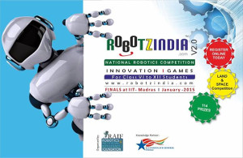

TI University Programme
The Shaastra 2015 Events team organized workshop under TI(Texas Instruments) University Programme. This workshop was conducted in collaboration with the CFI Electronics Club and the EE Department. As a prelude to the same, the Electronics Club of CFI brought the TI University Programme to CFI and IIT Madras for the first time, in association with EdGate Technologies and Shaastra.
RAIF
